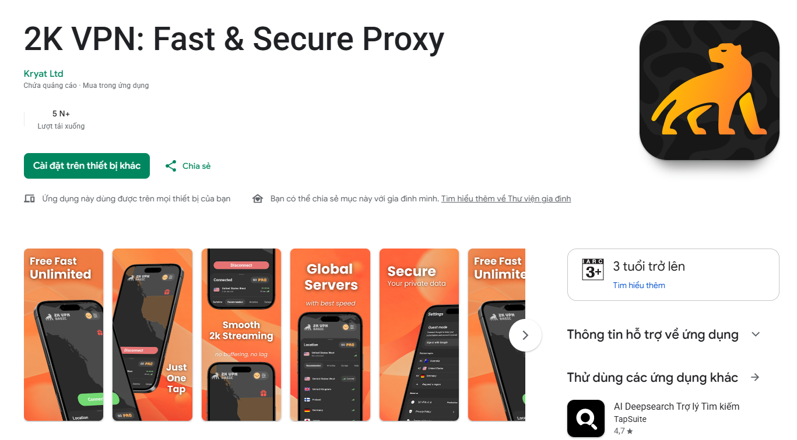

Phạm Quang
Minh
Học hỏi bằng trải nghiệm. Phát triển qua thử nghiệm. Tiến bộ mỗi ngày.
Giới thiệu
Xin chào, mình là Minh!
Sinh viên ngành Kinh tế Quốc tế tại Trường Đại học Ngoại thương (FTU). Mình có niềm yêu thích với marketing, công nghệ, sáng tạo nội dung và phát triển bản thân. Mình thích khám phá những lĩnh vực nằm ngoài phạm vi lớp học — từ thử nghiệm các chiến dịch quảng cáo, sáng tạo nội dung trên mạng xã hội đến xây dựng những dự án website và tìm hiểu cách ứng dụng công nghệ vào thực tế.
Dù xuất phát điểm không phải là một người có nền tảng lập trình chuyên sâu, mình luôn sẵn sàng học hỏi những kỹ năng mới và biến ý tưởng thành sản phẩm thực tế. Triết lý của mình: Đừng đợi đến khi biết hết mọi thứ mới bắt đầu. Hãy bắt đầu, thử nghiệm, học hỏi và tiến bộ.
Học vấn
Đại học Ngoại thương (FTU)
Xây dựng nền tảng về kinh tế, tư duy phân tích và cách nhìn nhận các vấn đề kinh doanh trong bối cảnh toàn cầu.
THPT Chuyên Thái Bình
Rèn luyện tư duy logic, khả năng tự học và tiếp cận các vấn đề theo hướng có hệ thống.
IELTS Academic — 7.0
Marketing in Action
Tiếp cận marketing theo hướng thực tiễn, tìm hiểu khách hàng, xây dựng giả thuyết và sử dụng nghiên cứu để hỗ trợ quyết định.
Dự án tiêu biểu
Digital Marketing
cho 2K VPN

Tham gia marketing bán thời gian, tiếp cận với hoạt động marketing thực tế. Tập trung vào Google Ads, tối ưu nội dung trang ứng dụng (ASO), và phân tích hành trình chuyển đổi người dùng.
- Khám phá Google Ads và chiến lược thu hút
- Nghiên cứu cải thiện chuyển đổi
Sáng tạo nội dung
Video Ngắn
Thử nghiệm sáng tạo video ngắn trên Instagram. Quan sát cách những lựa chọn sáng tạo ảnh hưởng đến tương tác. Một video đạt hơn 160.000 lượt xem tự nhiên.
- Chỉnh sửa nhịp dựng, hook và caption
- Theo dõi tương tác và phân phối nội dung
Dự án
CaseMatch
Nền tảng hỗ trợ sinh viên tìm kiếm đồng đội phù hợp khi tham gia các cuộc thi giải quyết tình huống kinh doanh (case competition). Chuyển một vấn đề thực tế thành ý tưởng sản phẩm số.
- Xây dựng luồng trải nghiệm người dùng (UX/UI)
- Khám phá ứng dụng AI trong viết mã
- Tìm hiểu cấu trúc frontend - cơ sở dữ liệu
Lĩnh vực & Kỹ năng
Digital Marketing
Kiến thức nền tảng, thử nghiệm quảng cáo, nghiên cứu đối thủ và phân tích hiệu quả chiến dịch dựa trên dữ liệu.
Content Creation
Chỉnh sửa video, phát triển ý tưởng, thử nghiệm định dạng và tư duy kể chuyện bằng hình ảnh.
Technology & Web
Ứng dụng AI, HTML/CSS, lên ý tưởng bản mẫu sản phẩm số và sử dụng công cụ tối ưu công việc.
Personal Strengths
Kỷ luật, kiên trì, khả năng tự học, thích nghi và tư duy giải quyết vấn đề.

Định hướng
Khám phá điểm giao thoa giữa kinh tế, marketing, công nghệ và sáng tạo. Sẵn sàng đón nhận cơ hội học hỏi, hợp tác và biến những điều nằm trên giấy thành sản phẩm thực tế. Mỗi dự án là một bài học mới.